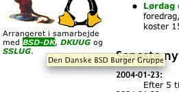

Kl. 12:10 d.04.02.04 af Jonas
Det er ikke alle der er lige begejstrede for weblogs, og jeg
bebrejder dem ikke. Prøv bare at se på hvor meget uinteressant crap jeg
har formået at plastre på disse sider i løbet af de sidste 2 år, og
især i de sidste 4-5 måneder.
Derfor er det befriende når nogen tager brillerne af, og sviner MT-brugere, og webloggere generelt.
Kommentarer [ 6 ]
Kl. 22:48 d.03.02.04 af Jonas
KCRW er så flinke at ligge deres arkiverede udsendelser online, og minsandten om der ikke var mere godt Meshell at finde.
Dels en udsendelse fra 1999 hvor hun snakker om 'Bitter' og en fra 2002 hvor hun snakker om 'Cookie: The Anthropological Mixtape'.
Og det er naturligvis blandet med lækre live-versioner af hendes musik.
Kommentarer [ 2 ]
Brussels sprouts is the shit!#
Kl. 21:34 d.03.02.04 af Jonas
And I mean that in more than one way. To many people, Brussels
sprouts is the nastiest vegetable ever invented. It tastes bad, it's
cabbage, and hence it has this innate ability to make you levitate and
being not the best smelling company around town. But besides that,
Brussels sprouts are so incredibly healthy, rich in vitamin C, A, and folic acid.
Usually, people hate Brussels Sprouts because of the way they are
served, which 90% of the time is simply boiled in water with a little
salt in it. To add insult to injury they are usually overcooked making
them limp and uninspiring. But, the B sprouts can be a really neat
sidedish, if treated right. This is how I treat them.
Læs mere...
Kommentarer [ 0 ]
Kl. 20:48 d.01.02.04 af Jonas
Fredag: Stengade 30,
Guldøl på fad, god veninde ved min side. Speaker bite me bed mig lige i
øret, og hvis det står til mig kommer de til at gøre det igen, for det
var en mægtig koncert.
Lørdag: Rust, Hvede på fad, tre venner ved min side. Sepiamusic på scenen med live-orkester og iBook solidt plantet i ansigtshøjde. For pokker da, var det lige en god koncert?
Kommentarer [ 3 ]
Kl. 18:50 d.29.01.04 af Jonas
Anecdotes about the development of Apple's original Macintosh computer, and the people who created it.
folklore.org: Macintosh Stories via daringfireball
Kommentarer [ 3 ]
Kl. 13:37 d.29.01.04 af Jonas
Jeg var på restaurant i forgårs, og fik for første gang i mit liv
smagt østers, og så endda tilberedt på hele to måder. Jeg smagte en rå,
og en med nogle rosenkål og sovseværk til.
Jeg vil straks afsløre, at det nok ikke er en spise jeg kommer til
at købe mig fattig i. Jeg syntes det smagte lidt af fiskekutter, eller
storebæltsfærge. Du ved, sommer, Korsør havn, diesel i luften, lidt
tang og nogle fisk der har ligget lidt for længe i solen. Nogle der har
smagt østers der kan nikke genkendende til den beskrivelse?
Moskusoksen var til gengæld helt i orden.
Kommentarer [ 3 ]
Kl. 14:55 d.28.01.04 af Jonas
Jeg har aldrig ejet et par ski, men så i dag fik jeg et par. De er
virkelig fine og skinnende og jeg tror de er gode at 'carve' noget sne
med.
Jeg har aldrig før stået på nogle ski der ligner dem jeg fik i dag,
jeg plejer bare at få en håndfuld, eller lidt over, så det er en
kærkommen variation.
Det er nemlig ikke nogle helt almindelige ski. De er faktisk så ualmindelige, at de kommer til at stå på mit eksamensbevis.
Min gruppefælle Tore og jeg fik 11 for vores projekt, og det er vi
faktisk skidelykkelige over. Og hvor stillede jeg nu min øl henne?
Kommentarer [ 10 ]
Kl. 14:06 d.27.01.04 af Jonas
Having replaced the quirky
Mac with shiny new PowerBooks and lots of software, Skyphone continue
to scratch and carefully damage the shiny surface of the digital
sounds, creating tiny and melodious pop-songs-without-singing, leaving
it to the listener to infer what the songs actually could have been and
what is lurking virtually beneath the constrained, deliberately
ambiguous surface of the song.
And that's one sentence from the website of skyphone. 4 mp3s are downloadable from the same site.
Catchy electronic stuff, reminding me of others from the electronic scene in Denmark.
Kommentarer [ 0 ]
Kl. 21:57 d.25.01.04 af Jonas
Jeg har fundet den person der sidder og sender emails med løfter om
gode låneaftaler, bedre potens, større bryster, forretningspartnere i
Nigeria, 100% tætte septiktanke og meget andet godt. Det er Bill Gates,
ellers kan han vel ikke love, at spammail ikke er noget problem om halvandet år?
Update: Gates er blevet udnævnt til ridder af den Britiske Dronning. Efter overskrifter som disse
kan man dog godt undres lidt hvorfor. Men ok, hans selskab og deres
produkter har da holdt liv i anti-virus og computersupport-branchen, og
forsørget en hel horde af EU-advokater i en længere periode.
Kommentar [ 1 ]
Kl. 16:52 d.23.01.04 af Jonas

Så det er det de laver i den danske forsamling af BSD-brugere - de spiser burgere.
Sakset fra LinuxForum.
Kommentarer [ 4 ]
Kl. 19:44 d.19.01.04 af Jonas
Man kan have rotter på loftet, mus i knæet og stær i øjnene. Og så siger man, at vi ikke lever i balance med dyrene.
Kommentarer [ 13 ]
Kl. 18:26 d.19.01.04 af Jonas
Når man bor mellem Pan og Heaven, og har vinduet åbent om
aftenen/natten hører man sommetider nogle sjove ting. Som f.eks. i nat,
ved 1-tiden, hvor der gik nogle mennesker forbi mit vindue mens de
snakkede om hvilken side de var til.
En af dem sagde, at han var straight bisexual
— betyder det så, at man kun er til andre biseksuelle?
Kommentarer [ 2 ]
Kl. 22:23 d.17.01.04 af Jonas
Min mobiltelefon er til reparation, og StjæleDanmark har været så
venlige at låne mig en telefon mens den bliver repareret. Inden jeg fik
den i hånden har en herreperson lånt den mens hans telefon var til
reparation, og han har tilsyneladende lagt de SMSere han fik i
telefonens hukommelse, og glemt at slette dem. Jeg har hermed fået et
meget detaljeret billede af denne persons liv og levned i dagene fra d.
17. december 2003 til den 13. januar 2004, og det er ikke kedeligt kan
jeg fortælle.
Læs mere...
Kommentarer [ 5 ]
Kl. 11:22 d.16.01.04 af Jonas
B&B Internationals
debutalbum skulle ramme gaden i den sidste halvdel af april i år. Jeg
glæder mig. Og jeg glæder mig meget til at se dem live igen, det er ved
at være alt for længe siden. De er på Gaffas top ti over up and coming
navne i dansk musik i 2004, det kunne jeg godt have fortalt dem, for
nogle år siden.
Og Jesper, hvis du læser dette, så er dine Simpsons DVD'ere stadig i god behold.
Kommentarer [ 7 ]
Kl. 3:43 d.15.01.04 af Jonas
Jeg synes, at alle der kan ringe op til Told og Skat og få en af de
ansatte til at sige, at det er systemets skyld at man skylder dem syv
et halvt tusinde kroner bør få en præmie.
Jeg har fået min, nemlig at der pt. ikke er syv et halvt tusinde
kroner mindre på min konto. Ellers havde den sunket til så dybt et
niveau, at titlen konto nok ikke længere ville være passende.
Kommentarer [ 0 ]
Til top